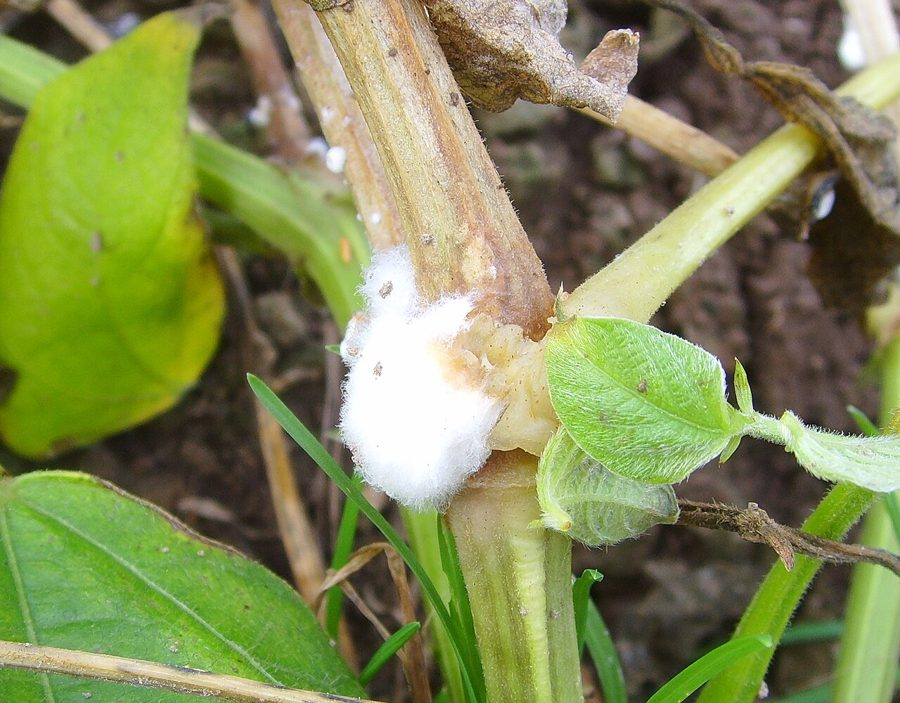

तना सड़नWhite Stem Rot of Mustard
Sclerotinia sclerotiorum · Sclerotiniaceae · FNG-0035

- Scientific name वैज्ञानिक नाम
- Sclerotinia sclerotiorum (Lib.) de Bary
- Family कुल
- Sclerotiniaceae
- Hindi हिंदी
- तना सड़न
- Local names स्थानीय नाम
- tana sadan, sarson ka tana sadan, white stem rot, sclerotinia
- Status here यहाँ की स्थिति
- native
- Movement आवागमन
- Resident, here all year
- Known from कहाँ दर्ज
- Others have published records from the wider Awadh–Purvanchal plain, none yet from Basti–Ayodhya अवध–पूर्वांचल से दूसरों के प्रकाशित अभिलेख, बस्ती–अयोध्या से अभी नहीं
- IUCN IUCN
- not evaluated
- Review समीक्षा
- audited and independently read
When to look कब देखें
Expected mainly in February, March, April. मुख्यतः फ़रवरी, मार्च, अप्रैल में अपेक्षित।
Tell it apart from इनसे अलग पहचानें
तना सड़न / White Stem Rot of Mustard
Sclerotinia sclerotiorum (Lib.) de Bary — Sclerotiniaceae
तना सड़न — सरसों के तने पर फरवरी-मार्च में सफेद फफूंदी जो तने को सड़ा देती है। संक्रमित तना खोखला हो जाता है, पौधा गिर जाता है, और दानों की पैदावार में भारी नुकसान होता है। यह बीमारी ठंड और नमी में तेजी से फैलती है। संक्रमित पौधे के तने में काली गोल संरचनाएँ (स्क्लेरोटिया) बनती हैं जो अगली साल फिर से बीमारी फैलाती हैं।
Quick Identification त्वरित पहचान
| Feature | Description |
|---|---|
| Initial symptom | Soft, water-soaked lesion on stem; may start at stem base or any point where leaves contact stem |
| Lesion color | White to pale brown; mycelium visible as white cotton-like growth |
| Sclerotia | Hard, black, irregular bodies (2–10 mm) visible inside or on infected stem; look like mustard seeds or charcoal pieces |
| Stem collapse | Stem becomes soft, mushy, and collapses; plant falls over |
| Smell | Characteristic musty, fungal odor from infected tissue |
| Leaf symptoms | Leaves above infection point wilt and die; stem becomes hollow and brittle |
Field tip: Walk through a mustard field in March. Look at the base of plants for white, moldy stems. If the plant is knocked over, examine the stem: if it is soft with black sclerotia inside, it is white stem rot. Fallen plants are diagnostic.
हिंदी — कैसे पहचानें: सरसों के तने पर सफेद फफूंदी। तना नरम, खोखला हो जाता है। तने को खोलो तो काली गोल चीजें (स्क्लेरोटिया) दिखती हैं। फरवरी-मार्च में। पौधा गिर जाता है।
Morphology and Symptomatology आकृति और लक्षण
Fungal structures:
| Structure | Appearance |
|---|---|
| Mycelium | White, fluffy, cotton-like growth visible on infected tissue |
| Sclerotia | Black, irregular to round, 2–10 mm; hard, resistant bodies |
| Apothecium | Cup-shaped fruiting structure (1–5 mm) produced on sclerotia under moist conditions; releases ascospores |
| Ascospore | Colourless, one-celled, 8–15 × 5–7 µm; released during cool, wet weather |
Disease progression:
- Infection: Ascospores from soil land on plant; mycelium enters through healthy tissue or stomata
- Colonization: Mycelium grows through parenchyma and vascular tissue; produces pectinase enzymes that break down cell walls
- Sclerotium formation: As lesion expands, black sclerotia form in the infected tissue; plant tissue decays
- Collapse: Stem weakens; plant falls; sclerotia drop into soil for overwintering
Life Cycle / Phenology जीवन चक्र
In eastern UP (mustard crop: November–April):
| Stage / Month | Event | Notes |
|---|---|---|
| November | Mustard crop sown; young plants emerge | Inoculum sources: ascospores from sclerotia in field soil; infected crop residue from previous season |
| December–January | Vegetative growth; cool, dry conditions | Infection occurs but disease progresses slowly due to cool temperatures and limited moisture |
| February–March | PEAK DISEASE PERIOD — Cool, moist weather (dew, light rains, irrigation); flowering stage begins | Ascospores released; new infections proliferate. Lesions expand rapidly. Sclerotia form in infected tissue |
| March–April | Crop ripens; disease may slow as plant senescence begins; sclerotia reach maturity | Infected plants fall; sclerotia ready to drop into soil |
| May onwards | Harvest; infected crop residue left in field or collected for animal feed | Sclerotia overwinter in soil at 5–10 cm depth; remain viable for 5–8 years |
हिंदी — जीवन चक्र: मिट्टी में बीज सोता है। नवंबर में सरसों बोने पर पौधे को संक्रमित करता है। फरवरी-मार्च में भीषण। मई में पौधा मरता है, स्क्लेरोटिया मिट्टी में गिरते हैं। अगली साल फिर से।
Ecology and Substrate पारिस्थितिकी और आधार
Soilborne plant pathogen: Sclerotinia sclerotiorum is a facultative saprophyte that survives as sclerotia in soil and plant debris.
Moisture and temperature requirements:
- Optimal infection: 15–25°C, high humidity and free moisture
- Ascospore release: Cool, moist weather; ascospores are released in early morning as sclerotia are wetted
- Rapid colonization: Occurs fastest in 15–20°C with wet conditions
- Stress to fungus: >25°C slows growth; dry conditions inhibit infection and ascospore release
- Survival: Sclerotia survive in soil for 5–8 years; can germinate repeatedly each season
Host range: Extremely polyphagous; infects mustard, sunflower, linseed, chickpea, lentil, bean, and many other crops and weeds.
Transmission:
- Primary: Ascospores from sclerotia in soil; ascospores are windborne
- Secondary: Mycelial contact between plants via fallen leaves or direct contact in dense stands
- Inoculum source: Sclerotia in field soil from previous season or infected crop residue
Agricultural / Human Relevance कृषि प्रासंगिकता
Economic impact:
- Yield loss: can be heavy in a bad season, depending on variety, timing and weather.
- Severity: In susceptible varieties with cool, wet conditions, losses can be catastrophic
- Quality loss: Infected seeds have reduced germination and oil quality
Management — in order of priority:
- Cultural practices (MOST EFFECTIVE):
- Field sanitation: Remove all mustard residue after harvest; burn or bury; do not leave in field
- Crop rotation: Avoid susceptible crops (mustard, linseed, chickpea) in same field for 2–3 years
- Deep ploughing: Bury sclerotia below 10 cm; reduces ascospore inoculum
- Plant spacing: Adequate spacing reduces humidity in canopy; avoids leaf-to-stem contact
- Resistant varieties (MODERATELY EFFECTIVE):
- Mustard: Pusa Mahak, PM 30, PM 26 (have moderate resistance)
- Use certified seed; even resistant varieties can be infected under high disease pressure
- Fungicide spray (SUPPLEMENTARY):
- Spray timing: Monitor crops in February; seek advice from the Krishi Vigyan Kendra once symptoms are spreading
- Fungicide choice: Carbendazim or Chlorothalonil; apply 2 times at 10-day intervals
- Cost: ₹500–700 per hectare
- Efficacy: Limited in dense stands where leaf-to-stem contact facilitates spread
- Integrated approach:
- Use resistant variety
- Ensure adequate plant spacing
- Remove crop residue completely
- Deep plough after harvest
- Monitor and spray if disease threshold is exceeded
हिंदी — रोकथाम: पुरानी पराली जला दो। रोधक किस्म लगाओ। पेड़ों के बीच जगह छोड़ो। फरवरी में देखना; दाग दिखें तो छिड़काव करो।
Expected Locally स्थानीय रूप से अपेक्षित
Not a field record. Written from published accounts for eastern Uttar Pradesh. No confirmed local sighting yet — if you have seen it, that is what the atlas needs.
अभी तक स्थानीय पुष्टि नहीं। यह विवरण प्रकाशित स्रोतों से है, किसी अवलोकन से नहीं।
White stem rot is expected in Basti and Ayodhya districts in mustard and linseed fields, particularly in cool, moist February–March weather. Disease severity depends on sclerotia levels in field soil and moisture availability. In years with heavy February–March rainfall or high soil moisture, losses in susceptible varieties can be severe. GBIF holds published records from the wider Awadh–Purvanchal plain.
Distribution वितरण
Global range: Found in temperate and subtropical regions worldwide; particularly important in cool-season crops of the Indo-Gangetic plain.
In India: Present in all winter-crop growing regions; endemic in northern India and the northeastern plain.
In Uttar Pradesh: Found in all mustard- and linseed-growing districts; eastern UP experiences consistent disease pressure due to cool, moist conditions.
In Basti district / eastern UP: Expected in mustard and linseed fields during the winter crop season; severity varies with weather and inoculum levels.
Research Questions शोध प्रश्न
- What percentage of mustard plants in your village are affected by white stem rot in March? / आपके गाँव में मार्च में कितने प्रतिशत सरसों के पौधों में तना सड़न दिखता है? — Survey 5 farmers; count affected plants per 100 plants in each field.
- Which mustard varieties are most susceptible to white stem rot in your area? — Compare symptoms across varieties in the same field.
- Does deep ploughing after harvest reduce white stem rot incidence in the next season? — Compare a deeply ploughed field with shallow ploughing.
- How many sclerotia are present in field soil, and how many years do they remain viable? — Extract sclerotia from soil; monitor germination over 5 seasons.
- Does crop rotation with a non-susceptible crop reduce white stem rot severity in the next mustard season? — Compare a field rotated with wheat vs. continuous mustard cultivation.
Similar Species मिलती-जुलती प्रजातियाँ
| Disease | How to tell apart | हिंदी | |
|---|---|---|---|
| Alternaria Leaf Spot | Lesions on leaves only; dark spots with concentric rings; no stem involvement | पत्तियों पर ही; तने पर नहीं | |
| **[[fusarium_wilt\ | Fusarium Wilt]]** | Plant wilts; vascular tissue brown or yellow, not white and mushy | मुरझाता है; तना सड़ता नहीं, ढीला नहीं |
| Powdery Mildew | White powder on leaves and stems; no soft lesions or sclerotia | पत्तियों पर सफेद पाउडर; तना नहीं |
Field rule: White, moldy lesion on mustard stem with black sclerotia visible inside; fallen plant in February–March = white stem rot.
Taxonomy & Classification वर्गीकरण
Original description. Originally described as Sclerotium sclerotiorum by Libert in 1837; transferred to Sclerotinia by de Bary in 1884.
Subspecies. No subspecies are recognized; however, significant genetic and pathogenic variation exists within the species.
Family and order placement. Order Helotiales, family Sclerotiniaceae. Sclerotinia contains several important plant pathogens.
Phylogenetic notes. Sclerotinia sclerotiorum is considered a species complex; molecular studies have identified cryptic lineages with differing host specialization.
IUCN status rationale. Not evaluated. As an obligate plant pathogen, its conservation status is not applicable.
Photo Gallery फोटो गैलरी
Photos needed आवश्यक फोटो
- [ ] Mustard stem with white mycelium and black sclerotia (तने पर सफेद फफूंदी)
- [ ] Cross-section of infected stem showing sclerotia (तने का कट)
- [ ] Fallen mustard plant in field with rotted stem (गिरा हुआ पौधा)
No photos yet — add field photos to media/species/white_stem_rot_of_mustard/ and run node scripts/sync_photos.js.
References संदर्भ
- Libert, M. (1837). Catalogue des plantes d'Eutropia. [original description as Sclerotium sclerotiorum]
- de Bary, A. (1884). Comparative Morphology and Biology of the Fungi, Mycetozoa and Bacteria. Clarendon Press, Oxford. [genus Sclerotinia]
- Boland, G.J. & Hall, R. (1994). Index of plant hosts of Sclerotinia sclerotiorum. Canadian Journal of Plant Pathology 16(2): 93–108.
- Purdy, L.H. (1979). Sclerotinia species — annotation and keys to the literature. Phytopathology 69(8): 887–899.
- Indian Council of Agricultural Research — Directorate of Oilseeds Research (2021). Management of Oilseed Diseases. ICAR-DOR, Hyderabad.
- GBIF Occurrence Data — Sclerotinia sclerotiorum, India (2026).
Source file: species/fungi/molds/white_stem_rot_of_mustard.md